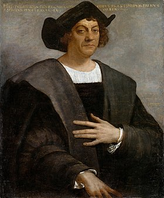
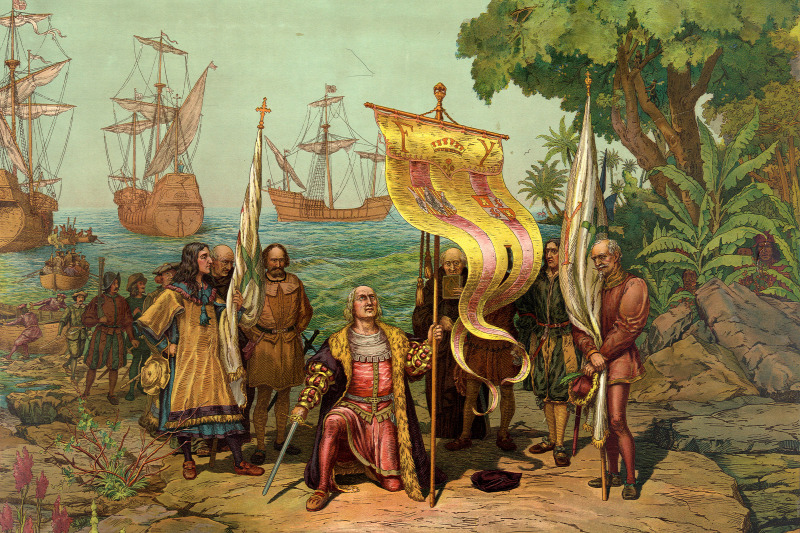

Élete

Cristoforo Colombo(Kolombusz Kristóf) 1451-ben született Genovában.
Kolombusz Kristóf egy szegény genovai családból származó,tehetséges és tapasztalt tengerész már az 1480-as évek közepétől támogatókat keresett,hogy nyugat
felé hajózva elérje a gazdag fűszertermő vidékeket,elsősorban Indiát.
Ötlete Portugál földön el lett utasítva,ezért a Spanyolországot egyesítő uralkodókat kereste meg tervével.
Ők a háborúval voltak elfoglalva,szóval nem igértek semmit,de később mégis támogatták,és adtak neki 3 hajót.
A Santa Maria-t,amivel később felfedezte amerikát,a Nina-t,és a Pinta-t,melyekkel Kolombusz 1492.augusztus 3-án este elindulhatott Palos kikötöjéből az ismeretlen felfedezésére.
Felfedezései
Amerika
1492-ben felfedezte amerikát,de előszőr azthitték hogy India földjén vannak.
Kolumbusz 1492-es felfedezései európai szempontból majdnem kétszeresére tágították a Föld oikumenét (=a lakott földet).

Kis-Antillák
Második útján 1493-ban felfedezte a Kis-Antillákat,Jamaikát és Puerto Ricót.
Utolsó napjai
1506. május elején Valladolidba utazott. 1506. május 19-én végrendelkezett, majd május 20-án elhunyt. A helyi ferences kolostorban temették el.